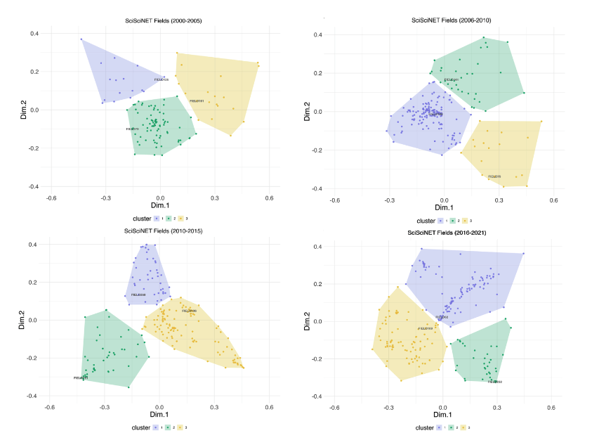
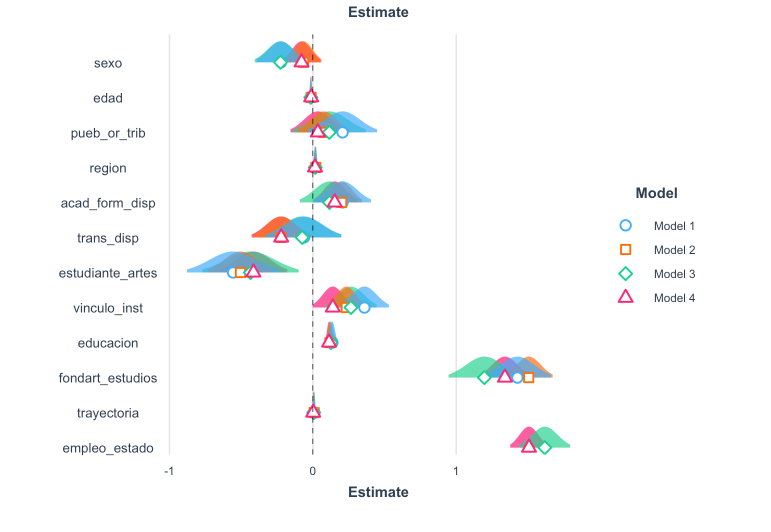
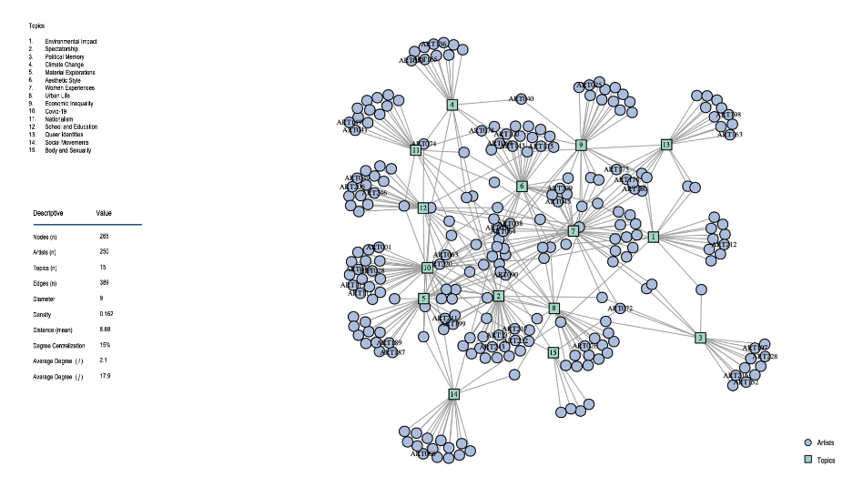

Research
My work has been presented in a range of academic formats — including journal articles, conference presentations, policy papers, and books. Below is a selection of my most recent work.
Publications
2025
Vanhulst, Julien; Padilla, Patricio; Espinosa-Rada, Alejandro; Cantillan, Roberto; Velázquez-Quiroz, Roberto; González, Karla. The reflexive process in sustainability science: A short critical review. Environmental Science & Policy, Volume 171, 2025, 104145. DOI: 10.1016/j.envsci.2025.104145
Abstract
Sustainability science has grown significantly as an interdisciplinary field in terms of publications and institutional relevance, yet continues to face substantial epistemological and methodological challenges. This article focuses on the critical self-reflection processes within sustainability science—defined as the systematic examination by scientists of their own knowledge production practices, methodologies, and epistemic foundations—as researchers actively construct this emerging field. This reflexive process, through which scientists critically assess both what they know and how they know it, plays a crucial role in consolidating sustainability science as a new scientific specialty. Through review of articles indexed in Web of Science (WoS) and SCOPUS up to July 2023 using key concepts of “science” and “sustainability” we identified 46 articles for analyzing these reflexive processes.
Our analysis reveals four cross-cutting dimensions structuring the field: 1) thematic delimitation, characterized by diversity yet fragmentation; 2) inter- and trans-disciplinary knowledge generation modes that, while widely endorsed, face significant implementation challenges; 3) the public and decisive character of knowledge; and 4) institutional configurations that both enable and constrain the field’s development. The findings emphasize that sustainability science’s reflexive process not only contributes to its own maturation as a scientific specialty but also offers valuable insights for broader societal questions regarding the production of relevant and public knowledge in the face of complex socio-ecological challenges. This reflexivity represents a distinctive feature that enables sustainability science to bridge disciplinary boundaries while fostering more participatory and transformative approaches to knowledge creation that can address pressing sustainability issues worldwide.
2022
Mardones, Antonia; Velázquez-Quiroz, Roberto; Mardones, Pablo; Espinosa, Maria Paz. Una Escuela Llamada América: Documentary film and photography as ethnographic tools for reflexive social research. Berkeley Journal of Sociology, Volume 63, 2022, pp.32-56.
2019
Velázquez-Quiroz, Roberto. Modernism came flying: a micro-history of artistic internationalism and cul-tural encounters in US-Chilean relations, 1968, Cold War History, Volume 19, Issue 2, 2019.DOI: 10.1080/14682745.2018.1520212
Abstract
This work examines the diplomatic, political, and cultural impact of artistic internationalism on US-Chilean relations in 1968. Based on a micro-historical approach to the global Cold War, the article analyses the relationship between modernisation programmes and artistic modernism under the framework of the Alliance for Progress. The case study of ‘De Cézanne a Miró’, the most expensive art collection sent to Chile by the Museum of Modern Art in New York (MoMA), reveals the creation, exportation, and reception of a distinctive cultural ethos promoted by US agents. The article traces the transnational networks that defined cultural encounters in a crucial year for domestic and global politics.
Conference Presentations
2025
Velázquez-Quiroz, Roberto; Vanhulst, Julien & Espinosa-Rada, Alejandro. Interdiscipline as Language. A Semantic Analysis of Sustainability Science in Latin America and the Caribean. II Chilean Social Network Conference, Pontificia Universidad Católica de Chile, January 8, 2025, Santiago, Chile.
Summary
| Info | |
|---|---|
| Title | Interdiscipline as Language. A Semantic Analysis of Sustainability Science in Latin America and the Caribean |
| Author(s) | Velázquez-Quiroz, Roberto; Vanhulst, Julien; Espinosa-Rada, Alenadro |
| Labels | Sociology of Science, Sustainability Science, Structural Topic Models |
| Language | English |
| Event | II Chilean Social Network Conference |
| Venue | Pontificia Universidad Católica de Chile |
| Date | January 8, 2025 |
| Location | Santiago, Chile |
| Link | here |
Interdisciplinary research is increasingly recognized as essential to address complex challenges in scientific production. However, understanding how interdisciplinarity shapes scientific ideas remains an open question. This presentation introduces a methodological framework in text analysis and mining to assess interdisciplinary integration in sustainability science using a semantic approach. By applying Structural Topic Models (STM) to a large corpus of academic publications from Latin America and the Caribbean (2000–2021), the paper examines how language structures influence scientific discourse.
Our analysis identifies key thematic trends in sustainability research, demonstrating that interdisciplinarity has evolved from fragmented disciplinary approaches to more integrated knowledge frameworks. Specifically, findings indicate that interdisciplinary integration significantly impacts topic prevalence, with energy research serving as a case study of how interdisciplinarity shapes the semantic structure of sustainability science. The results reveal that high levels of interdisciplinarity were initially associated with a lower level of involvement in energy-related discussions, but became a strong predictor of topic prominence in later periods.

2024
Velázquez-Quiroz, Roberto. The Art of Connections: Social Relations and Cultural Value in Chile’s Contemporary Art Market. XII Congreso Chileno de Sociología, Universidad Diego Portales, May 3, 2024, Santiago, Chile.
Summary
| Info | |
|---|---|
| Title | The Conditions of Success in the Contemporary Art Market |
| Author(s) | Velázquez-Quiroz, Roberto |
| Labels | Cultural Sociology, Statistics, Contemporary Art |
| Language | Spanish |
| Event | XII Congreso Chileno de Sociología |
| Venue | Universidad Diego Portales |
| Date | May 3, 2024 |
| Location | Santiago, Chile |
| Link | here |
This presentation explores the conditions that shape artistic success in cultural markets where private investment and philanthropy are not dominant forces in cultural production. Using the Chilean context—characterized by a strong model of state cultural funding—the analysis revisits and challenges Bones’ (1989) assumptions by presenting empirical evidence supporting the hypothesis that social connections remain critical, particularly those involving public institutions, policymakers, and cultural gatekeepers.
Methodologically, the study employs a predictive framework based on generalized linear models (GLMs), using artists’ funding-related attributes as key predictors of market success. Specifically, it estimates the probability of contemporary art sales through two-level hierarchical models that account for contextual variation across time and space. This approach enables the analysis to assess how different forms of institutional support influence sales performance, particularly in relation to the economic disruption caused by the COVID-19 pandemic.

Velázquez-Quiroz, Roberto. Artists, Artworks, and Galleries: A Socio-Semantic Approach to the Contemporary Art Market and its Dualities. Duality@50: Making Progress and Looking Forward, ETH Zürich, Social Networks Lab, April 17, 2024, Ascona, Switzerland
Summary
| Info | |
|---|---|
| Title | Artists, Artworks, and Galleries: A Socio-Semantic Approach to the Contemporary Art Market and its Dualities |
| Author(s) | Velázquez-Quiroz, Roberto |
| Labels | Social Network Analysis, Two-mode Networks, Cultural Sociology, Contemporary Art |
| Language | English |
| Event | Duality@50: Making Progress and Looking Forward |
| Venue | ETH Zürich, Social Networks Lab |
| Date | April 4, 2024 |
| Location | Ascona, Switzerland |
| Link | here |
In recent years, social scientists have increasingly focused on the production of cultural value as a prime example of the structure-content duality. Building on Ronald Breiger’s seminal work (1974), this presentation offers a socio-semantic network analysis of the contemporary art market, exploring the underlying mechanisms that shape its organizing principles. The research contributes to the existing literature by adopting a relational perspective to address core questions previously overlooked by economic and cultural analyses. Specifically, it examines the roles of organizational cultures and aesthetic topics in structuring the market for symbolic goods, the significance of various connections for competitiveness in the art scene, and the impact of social networks on access to social and symbolic resources in the art world. Methodologically this work combines Multilevel Exponential Random Graphs (MERGMs) and Structural Topic Models (STMs).

2023
Velázquez-Quiroz, Roberto. The Inter-organizational Field of Contemporary Art. International Network for Social Network Analysis SUNBELT 2023, June 27, Portland, US.
Summary
| Info | |
|---|---|
| Title | The Inter-organizational Field of Contemporary Art |
| Author(s) | Velázquez-Quiroz, Roberto |
| Labels | Social Network Analysis, Two-mode Networks, Cultural Sociology, Contemporary Art |
| Language | English |
| Event | International Network for Social Network Analysis SUNBELT |
| Venue | SUNBELT |
| Date | June 27, 2023 |
| Location | Portland, US |
| Link | here |
In recent years, the study of organizational fields within creative networks has become a focal point for examining both formal and informal relationships that contribute to value-making processes. This presentation centers on the inter-organizational field of contemporary art to empirically assess how ‘valuable’ art pieces emerge as a byproduct of the brokerage power exercised by organizations. By adopting a two-mode network perspective, this work provides an empirical approach to a classical sociological issue: under what conditions can homophilic selection affect access to material and symbolic resources in the art world? Ultimately, it seeks to determine which types of connections are crucial for convincing the art scene of an artist’s creative potential.
2021
Velázquez-Quiroz, Roberto. Aesthetic Dispositions and Cultural Variety: Hierarchical Clustering Analysis for Cultural Preferences in Contemporary Chile. IV ISA Forum of Sociology, ISA, February 23, Porto Alegre, Brazil.
Summary
| Info | |
|---|---|
| Title | Aesthetic Dispositions and Cultural Variety: Hierarchical Clustering Analysis for Cultural Preferences in Contemporary Chile |
| Author(s) | Velázquez-Quiroz, Roberto |
| Labels | Cultural Consumption, Cultural Sociology, Hierarchical Clustering |
| Language | English |
| Event | IV ISA Forum of Sociology |
| Venue | SA |
| Date | February 23, 2021 |
| Location | Porto Alegre, Brazil |
| Link | here |
The presentation investigates the impact of Chile’s neoliberal cultural production reforms on aesthetic preferences and cultural repertoires. Using longitudinal data, the analysis estimates consumer patterns based on variations in aesthetic tastes across ten fields of cultural production. Hierarchical clustering is employed to categorize consumers into three types: omnivores, univores, and those with cultural variety. The study evaluates individual attributes influencing taste preferences, including gender, age, ethnicity, educational attainment, and the aesthetic dispositions reported by respondents.
2019
Velázquez-Quiroz, Roberto. Privatization and Cultural Inequality in Post-dictatorship Chile. XXXVII International Congress of the Latin American Studies Association. LASA, May 11, Boston, US.
2018
Velázquez-Quiroz, Roberto. Family Portraits and Representation Strategies of Gran Santiago’s Working Class, 1950-1959. 113th American Sociological Association Congress. ASA, August 11, Philadelphia, US.
Velázquez-Quiroz, Roberto. The State of Taste. Market Technologies and the Birth of Cultural Inequalities in Chile’s Art Market (1870-1910). XIX ISA World Congress of Sociology. ISA, July 14, Toronto, Canada.
2017
Velázquez-Quiroz, Roberto. Art Markets and State Formation in Nineteenth-Century Chile (1850-1891). XXXV International Congress of the Latin American Studies Association. LASA, April 8, Lima, Peru.
Policy Papers
2017
Palominos, Simon & Velázquez-Quiroz, Roberto. Política Nacional de las Artes de la Visualidad 2017-2022. Lineamientos y Discusiones en torno a Políticas Culturales. Santiago: Consejo Nacional de la Cultura y las Artes, Chile, (2017). ISBN: 978-956-352-024-8.
Books
2016
Ossa, Carolina; Cox, Carolina; Velázquez-Quiroz, Roberto; Martinez, Juan Manuel (Eds.) Copper Canvases, Art Technologies, and Valuation: The Social Life of Flemish Art in Chile’s Colonial Economy. Santiago: Dibam, ISBN 978-956-244-351-7 (2016).
Book Chapters
2022
Velázquez-Quiroz, Roberto. “The arts of networking: artists, collectors, merchants, and galleries in nine-teenth century Chile.” Chap 3, In Formas de Arte y Ciencias Sociales. Santiago: UAH, (2022).
2018
Velázquez-Quiroz, Roberto. “From Paris to La Araucanıa. The social life of European art supplies in Chile’s colonial economy,” Chap 5, In Imagen y Semejanza: IV Coloquio de Investigacion en Arte, Santiago: UAH, (2018).